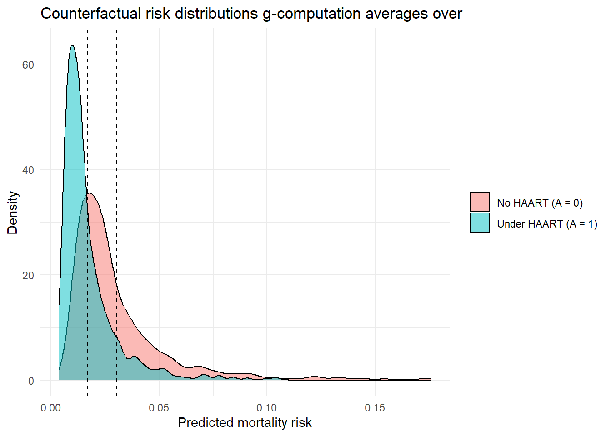

Show code
library(tidyverse)
source("_data/load-haart-cohort.R")
dat <- as_tibble(haart_baseline)Estimated reading time: 25 minutes
G-computation as a foundation for causal estimation
Outcome modeling and standardization, usually called g-computation, is one of the oldest and most intuitive approaches to causal inference (J. M. Robins, Rotnitzky, and Zhao 1994; Petersen and Laan 2014).
G-computation estimates causal effects by predicting what would happen to everyone under each treatment, then comparing those predictions (Hernán and Robins 2025). Nothing hinges on reading off a single regression coefficient. It implements the identification formula from Chapter 5 directly, an idea that traces back to the g-formula (J. Robins 1986) (\(E[Y(a)] = E_W[E[Y \mid A=a, W]]\), where the potential outcome \(Y(a)\) is written \(Y(1)\) and \(Y(0)\) for the two treatment levels), which makes it the most concrete entry point for learning causal estimation and shows how a causal estimand maps to a statistical one.
The method reconstructs what would have happened if everyone received treatment (\(A=1\)) and, separately, if everyone received control (\(A=0\)). The recipe has three steps: fit an outcome model \(E[Y \mid A, W]\), predict outcomes for each individual under both treatments, then average those predictions (standardization).
The equality \(E[Y(a)] = E_W[E[Y \mid A=a, W]]\) holds only under three conditions, developed in Chapter 5:
If any of these fail, the standardized estimate no longer carries a causal interpretation, no matter how well the outcome model fits.
We fit a logistic regression model predicting the outcome from treatment and confounders:
mod <- glm(died ~ ever_haart + age + sex + cd4_sqrt_baseline,
family = binomial, data = dat)
broom::tidy(mod, conf.int = TRUE) |> knitr::kable(digits = 3, caption = "Outcome model coefficients")| term | estimate | std.error | statistic | p.value | conf.low | conf.high |
|---|---|---|---|---|---|---|
| (Intercept) | -4.759 | 1.030 | -4.621 | 0.000 | -6.810 | -2.767 |
| ever_haart | -0.601 | 0.448 | -1.343 | 0.179 | -1.554 | 0.227 |
| age | 0.057 | 0.016 | 3.669 | 0.000 | 0.026 | 0.087 |
| sex | 0.141 | 0.470 | 0.301 | 0.763 | -0.872 | 1.002 |
| cd4_sqrt_baseline | -0.039 | 0.033 | -1.170 | 0.242 | -0.105 | 0.025 |
Pitfall. The coefficient on ever_haart from this logistic regression is a conditional log-odds ratio. It tells you the association between HAART initiation and mortality holding confounders fixed, which is not a causal effect on its own. The next two steps, prediction and averaging, are what turn this model into a causal estimate.
We ask two “what if” questions for every single person in the dataset, regardless of what treatment they actually received: what if this person had been treated (\(A=1\))? What if untreated (\(A=0\))?
# create counterfactual datasets
dat1 <- dat %>% mutate(ever_haart = 1)
dat0 <- dat %>% mutate(ever_haart = 0)
# predict potential outcomes
p1 <- predict(mod, newdata = dat1, type = "response")
p0 <- predict(mod, newdata = dat0, type = "response")Here p1[i] and p0[i] are the predicted outcomes for person i under treatment and control, respectively. Notice that we are not comparing treated against untreated groups. We are comparing two hypothetical worlds for the same people. That counterfactual move is what separates causal inference from plain regression.
Averaging the counterfactual predictions over the entire population turns model-based predictions into a causal estimate: a standardized (marginal) risk difference, the same quantity a well-randomized trial would yield.
risk1 <- mean(p1)
risk0 <- mean(p0)
ate <- risk1 - risk0
knitr::kable(data.frame(risk1 = risk1, risk0 = risk0, ate = ate))| risk1 | risk0 | ate |
|---|---|---|
| 0.0170344 | 0.0303884 | -0.0133539 |
library(ggplot2)
tibble::tibble(
risk = c(p1, p0),
arm = rep(c("Under HAART (A = 1)", "No HAART (A = 0)"), each = length(p1))
) |>
ggplot(aes(risk, fill = arm)) +
geom_density(alpha = 0.5) +
geom_vline(xintercept = c(risk1, risk0), linetype = "dashed") +
labs(x = "Predicted mortality risk", y = "Density", fill = NULL,
title = "Counterfactual risk distributions g-computation averages over") +
theme_minimal()
How to interpret these results: In Table 6.1, ate is the standardized (marginal) risk difference, and it is the causal number, not either regression coefficient. Figure 6.1 plots the full counterfactual risk distributions behind those numbers, with the dashed lines marking risk1 and risk0 and the gap between them showing the ATE. Read the estimate as follows. If the entire population had initiated HAART rather than not, the estimated mortality risk would change by ate (about -1.3 percentage points), with the measured confounders’ distribution held fixed. risk1 and risk0 are the standardized risks under universal treatment and under no treatment, and the contrast between them is what a well-randomized trial would have estimated.
One strength of g-computation is that once you have the counterfactual predictions p1 and p0, you can compute any contrast, not just the risk difference. A single regression coefficient does not give you that.
# Relative risk (risk ratio)
rr <- risk1 / risk0
# Causal prevented (excess) fraction, relative to a "no one treated" world:
# (P(Y=1) - P(Y(0)=1)) / P(Y=1)
# For a PROTECTIVE exposure (risk0 > overall_risk) this comes out NEGATIVE,
# meaning the current treatment distribution PREVENTS that fraction of deaths
# relative to no one being treated.
overall_risk <- mean(dat$died)
prevented_frac <- (overall_risk - risk0) / overall_risk
knitr::kable(data.frame(
Measure = c("Risk difference (ATE)", "Relative risk", "Prevented fraction (vs no one treated)"),
Estimate = round(c(ate, rr, prevented_frac), 4)
))| Measure | Estimate |
|---|---|
| Risk difference (ATE) | -0.0134 |
| Relative risk | 0.5606 |
| Prevented fraction (vs no one treated) | -0.1763 |
Table 6.2 collects three contrasts computed from the same p1 and p0. The relative risk tells you how many times more likely the outcome is under treatment versus control. The prevented fraction compares the observed mortality risk to the risk in a counterfactual world where no one initiated HAART. None of these is available from a single logistic regression coefficient; you would have to exponentiate and back-transform under strong scale assumptions, whereas g-computation reads them straight off the predicted counterfactual risks.
The prevented fraction is \((P(Y=1) - P(Y(0)=1)) / P(Y=1)\). The familiar “population attributable fraction” reading, the share of cases eliminated by removing exposure, assumes a harmful exposure. HAART is protective, so \(\text{risk0} > \text{overall risk}\) and the quantity comes out negative: the current treatment distribution prevents that fraction of deaths, and moving everyone to no-HAART would add deaths rather than eliminate them. Under the identification assumptions above this contrast is causal; the traditional epidemiologic PAF formula, built from observed prevalence, is not.
It directly implements the identification formula:
\[ E_W[ E[Y | A=a, W] ]. \]
In plain terms, this averages the predicted outcomes under treatment (or control) across the full study population, weighting each prediction by the population’s covariate distribution. The goal is unchanged: estimate \(E[Y(1)] - E[Y(0)]\), the population-level risk difference.
This is one of the most commonly confused points in epidemiology:
Conditional log-odds ratio (what logistic regression gives you): “Among people with the same age, sex, and baseline CD4, how do the odds of death differ between those who initiated HAART and those who did not?” This is a measure of association within strata. It does not tell you what would happen if you intervened on the whole population. It is also non-collapsible, meaning it changes depending on which covariates you condition on, even without confounding (Greenland, Robins, and Pearl 1999).
Marginal risk difference (what g-computation gives you): “If we could treat everyone versus no one, how much would the overall population risk change?” This is a causal contrast on the risk scale, the kind of number a clinician or policy maker can act on.
G-computation bridges the gap. It uses the conditional model internally but standardizes over the population to produce the marginal (causal) effect.
G-computation rests entirely on the outcome model \(E[Y \mid A, W]\). If that model is wrong (e.g., omits interactions, assumes linearity when the truth is non-linear), bias propagates directly into the causal estimate. For example, suppose the true risk of virologic failure depends on a nonlinear interaction between baseline CD4 count and age, but the fitted model includes only main effects. The model will generate systematically wrong counterfactual predictions for patients with unusual combinations of CD4 and age, and the resulting ATE estimate will be biased. Unlike IPTW, where positivity failures produce visible extreme weights, g-computation’s extrapolation errors are silent: the model returns a number with no warning that it is wrong. Always check residuals and consider flexible alternatives (see Chapter 8).
The warning above is easy to state and easy to ignore, so here it is as a number. We simulate a world where the truth is nonlinear (Sofrygin, Laan, and Neugebauer 2017), then estimate the effect two ways: with a main-terms logistic regression that misses the nonlinearity, and with a model that includes it. The risk difference is known by construction, so we can measure exactly how far the misspecified model lands from the truth.
set.seed(2024)
n <- 4000
age <- runif(n, 30, 80)
A <- rbinom(n, 1, plogis(-2 + 0.04 * age)) # older patients treated more often
# True risk: curved in age, and the treatment effect is larger above age 65
true_risk <- function(a, w) plogis(-1 + 0.8 * a - 0.0009 * (w - 55)^2 + 0.6 * a * (w > 65))
Y <- rbinom(n, 1, true_risk(A, age))
d <- data.frame(Y, A, age)
# Truth: population risk difference under the known model
true_ate <- mean(true_risk(1, age) - true_risk(0, age))
# Misspecified g-computation: main terms only (no curvature, no interaction)
m_wrong <- glm(Y ~ A + age, family = binomial, data = d)
ate_wrong <- mean(predict(m_wrong, transform(d, A = 1), type = "response") -
predict(m_wrong, transform(d, A = 0), type = "response"))
# Correctly flexible g-computation: include the curvature and interaction
m_flex <- glm(Y ~ A * age + I((age - 55)^2) + A:I(age > 65), family = binomial, data = d)
ate_flex <- mean(predict(m_flex, transform(d, A = 1), type = "response") -
predict(m_flex, transform(d, A = 0), type = "response"))
round(c(truth = true_ate, main_terms = ate_wrong, flexible = ate_flex), 3) truth main_terms flexible
0.215 0.196 0.199 The main-terms estimate misses the true risk difference because it cannot represent the curvature or the above-65 interaction. The flexible model, which happens to include exactly those terms, recovers the truth. The catch in real data is that no one tells you which terms to add. That is the problem Super Learner (Chapter 9) solves: instead of guessing the functional form, it lets a library of algorithms and cross-validation choose it (Laan, Polley, and Hubbard 2007). That is why the next chapters build g-computation and targeted maximum likelihood estimation (TMLE) on top of machine learning rather than a single hand-specified regression.
If some strata almost never receive a treatment, g-computation extrapolates into regions with little observed data. R will return a number, but it may be meaningless. Check propensity scores for values near 0 or 1:
ps <- predict(glm(ever_haart ~ age + sex + cd4_sqrt_baseline,
family = binomial, data = dat), type = "response")
summary(ps) Min. 1st Qu. Median Mean 3rd Qu. Max.
0.06072 0.24484 0.30615 0.31333 0.37395 0.67118 G-computation handles near-positivity violations differently from IPTW. Where IPTW produces extreme weights for observations with propensity scores near 0 or 1, g-computation extrapolates from the fitted outcome model. How reliable that is depends on how well the model captures the true outcome surface in sparse regions of the covariate space. The extrapolation is implicit and may produce no visible warning. Chapter 11 covers positivity and overlap on their own, with diagnostics and remedies.
Pitfall. No modeling strategy fixes missing confounders. If an important common cause of treatment and outcome is absent from your dataset, g-computation (like every other method in this handbook) will produce a biased estimate. What g-computation does offer is explicit assumptions: you can see exactly which variables \(W\) enter the model, which helps transparent reporting and sensitivity analysis.
Practical note. The biggest limitation of g-computation with logistic regression is that you must get the functional form right. One alternative is to replace the parametric model with a data-adaptive learner (random forests, gradient boosting, GAMs, or a SuperLearner ensemble) (Laan, Polley, and Hubbard 2007), which loosens the parametric assumptions. Later chapters integrate SuperLearner with TMLE (Laan and Rubin 2006).
Super Learner is an ensemble that uses cross-validation to combine many candidate models into a single prediction, introduced in full in Chapter 9. Until then you can read the SuperLearner(...) call below as a flexible stand-in for the single GLM: same role (predict the outcome given treatment and covariates), but it lets the data choose the functional form instead of you guessing it.
library(SuperLearner)
set.seed(2026)
# SuperLearner expects a plain data.frame of predictors
X_all <- as.data.frame(dat[, c("ever_haart", "age", "sex", "cd4_sqrt_baseline")])
sl_mod <- SuperLearner(
Y = dat$died,
X = X_all,
family = binomial(),
SL.library = c("SL.glm", "SL.ranger", "SL.gam")
)
# predict for counterfactuals (predictor columns only)
p1_sl <- predict(sl_mod, newdata = transform(X_all, ever_haart = 1))$pred
p0_sl <- predict(sl_mod, newdata = transform(X_all, ever_haart = 0))$pred
# Super Learner g-computation ATE (compare to the GLM estimate above)
c(ate_sl = mean(p1_sl - p0_sl)) ate_sl
-0.01370863 The simple plug-in g-computation implementation shown here produces a point estimate but does not automatically provide standard errors or confidence intervals. This is a practical limitation of the plug-in approach, not a fundamental property of g-computation: influence-function-based variance estimators exist under regularity conditions and are used by TMLE (covered in Chapter 8).
In practice, the most common approach for inference with plug-in g-computation is the nonparametric bootstrap: repeat the entire procedure (fit model, predict counterfactuals, average) on many resampled datasets and take percentiles of the resulting distribution.
# Bootstrap confidence interval for g-computation
set.seed(42)
n_boot <- 500
boot_ates <- numeric(n_boot)
for (b in seq_len(n_boot)) {
boot_dat <- dat[sample(nrow(dat), replace = TRUE), ]
boot_mod <- glm(died ~ ever_haart + age + sex + cd4_sqrt_baseline,
family = binomial, data = boot_dat)
bp1 <- predict(boot_mod, newdata = mutate(boot_dat, ever_haart = 1), type = "response")
bp0 <- predict(boot_mod, newdata = mutate(boot_dat, ever_haart = 0), type = "response")
boot_ates[b] <- mean(bp1) - mean(bp0)
}
quantile(boot_ates, c(0.025, 0.975)) 2.5% 97.5%
-0.030440370 0.005223207 This works but is computationally expensive and does not benefit from efficiency theory. The methods in the next two chapters (IPTW and especially TMLE) give analytic standard errors and confidence intervals based on influence function theory, which makes them more practical for routine use (Laan and Rubin 2006). TMLE in particular pairs the outcome-modeling strengths of g-computation with formal inference, one reason it is the recommended approach in later chapters.
G-computation = fit a model, predict under both treatments for everyone, then average. That three-step standardization is what converts a conditional model into a marginal causal estimate. Its main vulnerability is outcome-model misspecification. Flexible learners and doubly robust methods (IPTW, TMLE) address that in later chapters.
No. A logistic regression coefficient is a conditional log-odds ratio that describes how the log-odds of the outcome change with treatment, holding covariates fixed at particular values. G-computation uses that same model but adds two steps: it predicts outcomes for every individual under both \(A=1\) and \(A=0\), then averages those predictions over the entire population. The result is a marginal risk difference (the ATE on the risk scale), which answers a different question: “How much would population-level risk change if we could treat everyone versus no one?” The regression coefficient is conditional and on the log-odds scale, while the g-computation estimate is marginal and on the risk scale. They are different quantities even when the underlying model is the same.
G-computation is only as good as its outcome model. If \(E[Y \mid A, W]\) is misspecified (for example, it assumes a linear relationship when the truth involves interactions or non-linearities), the counterfactual predictions will be systematically wrong, and the ATE estimate will be biased. Unlike doubly robust methods (AIPW, TMLE), g-computation has no second chance: there is no treatment model to compensate for outcome-model errors. That is why diagnostics (residual checks, comparison across model specifications) and flexible modeling strategies (SuperLearner) matter when you use g-computation.
The answer is the standardization (averaging) step. The outcome model \(E[Y \mid A, W]\) is conditional: it gives a predicted outcome for a specific individual with covariates \(W=w\) under treatment \(A=a\). But g-computation does not report these individual-level predictions. Instead, it predicts for every person under \(A=1\) and under \(A=0\), then takes the population average of the difference. This averaging over the empirical covariate distribution \(P(W)\) is exactly the operation \(E_W[E[Y \mid A=a, W]]\) from the identification formula, and it produces a marginal effect. The conditional model is an intermediate tool. The final quantity is a population-level causal contrast.
G-computation depends entirely on the outcome model being correctly specified. What if we modeled the treatment mechanism instead? The next chapter introduces IPTW, which does exactly that: it reweights observations to create a pseudo-population where treatment appears randomized.